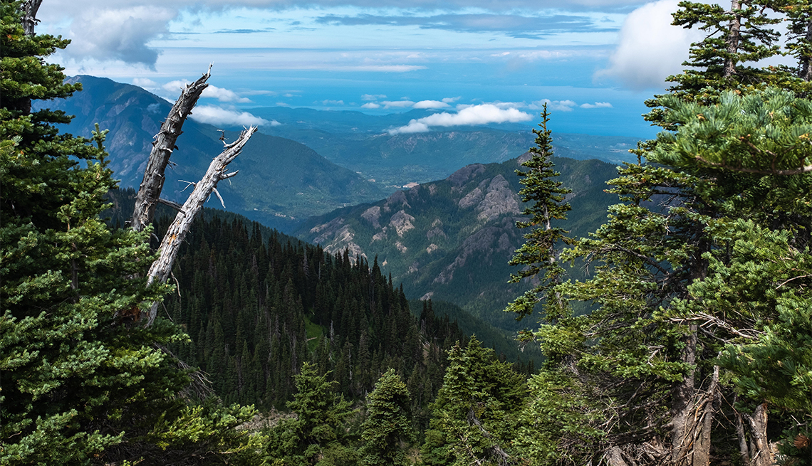
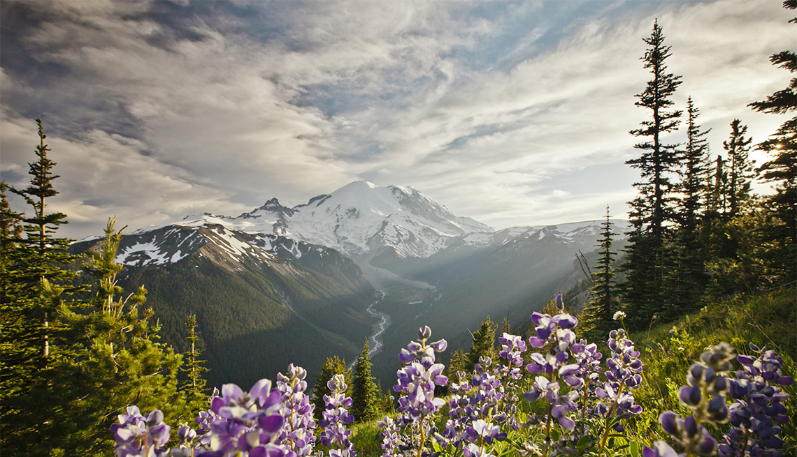

Washington State, part of the Pacific NorthWest is home to some of the most stunning and diverse parks in the country. Here are two must-see destinations:
Olympic National Park, with over 900,000 acres, 73 miles of wildernessm and over 3,000 miles of rivers and stream, offers beauty and impactful wildlife inside the Pacific Northwest. With wheelchair support, you'll never feel left out! Many activities such as hiking, backpacking, and rowing your boat. Not only that, there are over 130 historical structures, nearly 500,000 museum objects, and over 160,000 archival pages. Olympic national park is located in Port Angeles.

Mount Rainier national park, located in the west-central part of Washington State, towers at 14,410 feet and serves as an iconic symbol of Washington. Known for its glaciers, alpine meadows, and scenic views, the park attracts hikers, photographers, and nature lovers year-round. During summer, wildflowers cover the valleys of Paradise and Sunrise, making it one of the most beautiful spots in the state.
